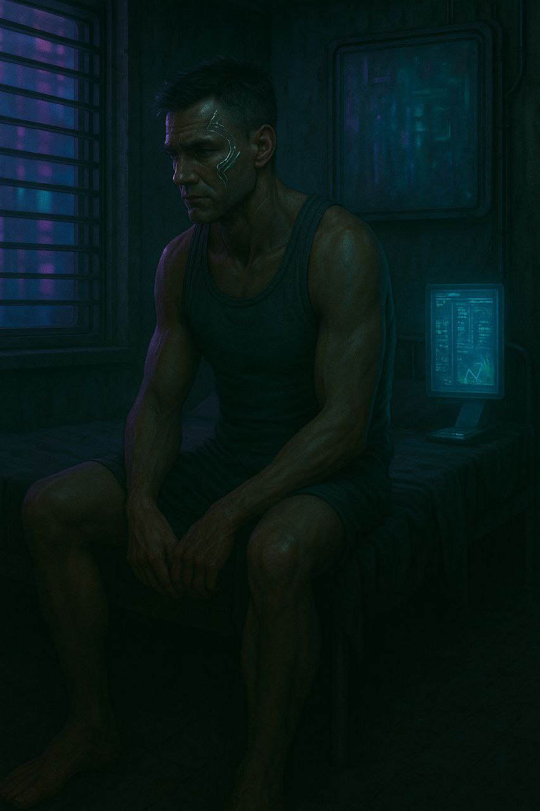
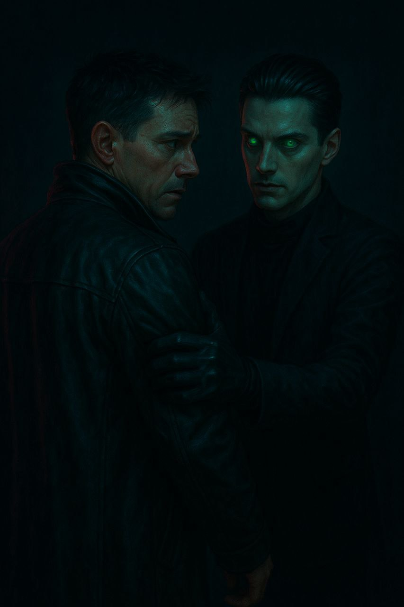

Aparições
De fato eu já estava meio cansado de tudo aquilo, e esse tipo de pensamento já fazia parte do meu cotidiano
...
Lembro-me daquele dia, por volta dos meus 11 anos. Constantemente excluído dos círculos sociais, por não haver em mim interesse algum em conversas que me pareciam constantemente desinteressantes. Sempre me achei estúpido por não conseguir encontar sentido em algo ,que para tantos, parecia tão natural — a norma dos ditos normais... Bom, talvez não fosse tão estúpido assim.
Sim, mas trago na memória aquele fatídico dia, talvez pela necessidade de uma medida desesperada que até hoje tenho tatuada em minha mente. Recordo-me de ter lido alguns livros sobre magia e sabedoria antiga, desde Crowley a Papus, e de ter ficado pelo menos curioso quanto às consagrações de antigos deuses que hoje não existem mais, e ao tipo de conhecimento que os povos antigos construíram e hoje parecem apenas cenário de loucura ou algo do tipo. Claro que a construção de todas essas crenças deveria conter base em algo intrinsecamente humano, ainda que eu não entendesse. No final das contas, aquilo havia me fisgado, e o estudo desse tipo de conteúdo se transformou em um hábito. A essa altura, já tinha decidido que minha vida não era algo que eu de fato desejava; tinha um desejo de "fazer parte do todo", seja lá o que isso significasse.
"É isso", foi minha conclusão: "preciso tomar uma atitude drástica, preciso fazer algo, preciso de algum sentido!". Nesse mesmo dia entrei no meu quarto e tranquei a porta. Desenhei símbolos sagrados em meu corpo, meio sem jeito. Não sabia bem o que estava fazendo ou buscando, mas fiz mesmo assim. Lembro-me de ter usado uma faca nova que meu pai havia comprado; ainda tinha nela um fio minimamente preciso e então cortei os símbolos em minha pele, eram cortes muito amadores e desleixados. Comecei clamando a Deus e ao diabo, talvez por ser algo mais natural dentro da cultura na qual vivia, e logo me vi descrevendo os nomes de tantos outros deuses menos dicotomicos dos livros que havia lido com afinco! E lá estava eu, em uma epifania: havia tido a atitude dos antigos de criar uma relação direta com o mundo espiritual! No entanto nada aconteceu. Eu estava ali com cortes e sangue, ferido de todas as formas possíveis — por dentro e por fora —, mas nada havia acontecido. Cheguei a conclusão: realmente era algum tipo de demente. Implorei para ser tão estúpido quanto o resto das pessoas, mas, aparentemente, eu era o único que fazia parte desse grupo.
E, nos anos seguintes, nada mudou. Continuei sendo espancado por marmanjos que, na lógica do darwinismo, claramente não seriam os mais aptos a sobreviver — ou, ao menos, eram a prova viva de que não eram a espécie humana não havia evoluído tão bem assim. Além disso, era humilhado por garotas que, em suas mentes rasas, se gabavam de ter o dom de serem tão profundas quanto acreditavam ser — uma ilusão que, para elas, parecia tão real quanto suas próprias convicções.
Confesso que perdi muitos anos da minha vida procurando razão para tudo aquilo. Li sobre tudo que pude e cheguei à conclusão de que, de fato, como já estava escrito em um dos vários livros sagrados, debaixo do Sol não há nada novo, e isso me fez duvidar que o homem realmente tivesse evoluído em algum momento.
Ao menos saber tanto sobre isso me fez desistir e aceitar a solidão, como deveria ser. E hoje estou aqui, infeliz, com um emprego que me tira do sério por conta daquela mulher que, por alguma razão que só ela e Deus sabem, cismava comigo desde o primeiro dia em que nos vimos. Sequer conversávamos, no entanto, ela sempre conseguia me tirar do sério com aquela voz insuportavelmente aguda — desproporcionalmente aguda — que me irritava profundamente. Aquele andar arrastado... arrastava aquelas sandálias velhas como uma cobra encarquilhada arrasta o próprio corpo em busca de uma presa morta. Aparentemente, eu era a presa morta, afinal, eu aguentava tudo aquilo calado. Calado.
Casara com uma mulher religiosa, que sempre insistia para que eu fosse aos seus cultos — aquelas reuniões estridentes. Segurei o riso quando pensei o quanto aquilo me era semelhando a um terreiro ou algo do tipo, levando em consideração o quanto ela desprezava esse segmento. Mas, com o riso contido, por alguma razão que não sei explicar, naquele dia em específico — que para mim carregava um ar diferente, um ar denso, mas que me fazia sentir uma paz desconhecida — fiz algo genuinamente espontâneo:
- — Amor, quando vai me acompanhar à igreja? — disse ela. — Você anda tão estressado ultimamente, tenho certeza de que isso lhe fará bem!
Olhei seus olhos esperançosos e senti que talvez pudesse ser um pouco mais flexível naquele dia. Não sem resistência, respondi:
- — Vá se arrumar, te espero no carro.
Ela fez uma cara desconfiada.
- — Está falando sério?
- — Vai esperar que eu mude de ideia?
Ela me abraçou com força disse que, com certeza, aquela escolha mudaria a minha vida para sempre. Mal sabia eu que de fato ela estava certa.
Chegamos. Ela sorria e cumprimentava todos, segurando-me pelo braço como se eu fosse um troféu. Sei que fazia aquilo por felicidade, no entanto, eu nunca me senti tão desconfortável. Sentamos na segunda fileira de cadeiras, a partir do nosso orador. Após alguns minutos, ele começou a falar sobre o quanto estava feliz por ver tantos membros reunidos, uma frase com um tom premeditado... não é curioso como a história sempre se repete?
Enquanto ele falava, de forma um tanto tendenciosa, sobre aquele livro que eu já conhecia de cor (ainda me lembrava de quase todas as passagens, mesmo após tantos anos tendo desistido desse tipo de leitura), comecei a observar as pessoas com sorrisos luminosos, como crianças ao verem o pai com um brinquedo novo nas mãos.
- - Deus, como isso me parece errado - pensei.
A visão de seus olhos brilhantes, cheios de esperança, e a ideia de que tudo aquilo havia sido feito justamente com essa intenção me fez querer rir. Soltei uma pequena risada, e todos me olharam com um ar confuso. Abaixei a cabeça — por não poder enterra-la. Minha mulher estava vermelha.
- - (Espero que seja de vergonha, e não raiva)-
Continuei observando as pessoas discretamente, e aquelas palavras pareciam nem estar sendo pronunciadas em minha língua. Eu não conseguia dar o mínimo de atenção.
Foi então que vi aquele rapaz que absorveu por completo a minha atenção. Um rapaz pálido — no entanto, era uma palidez saudável, uma cor que lembrava uma luz natural, ou algo do tipo. Cabelos negros como petróleo, penteados devidamente para trás. Olhos verdes como água — um verde tão claro quanto eu nunca havia visto. Eu sequer imaginava que aquela cor pudesse existir... até que a vi.
E, em um momento em que parecia que a igreja inteira estava em completo silêncio, observei as pessoas ao redor — e elas ainda pareciam dar ouvidos ao orador. No entanto, eu me sentia afundado em um silêncio particularmente incômodo. Quando voltei a olhar para o rapaz, percebi que ele me fitava diretamente nos olhos. Um olhar aterrorizante, tão profundo que parecia enxergar minha alma, como se pudesse ler o que eu pensava. Aterrorizante!
Virei para frente, atemorizado.
- - Que diabo era aquilo? - pensei, aflito.
De maneira súbita, me recordei do dia em que consagrava deuses com meu próprio sangue — e da frustração que aquilo me causara.
- - Preciso sair daqui... por que estou pensando nisso agora?
Quando dei por mim, vi que todos estavam de pé, se despedindo, e minha mulher me balançava bruscamente, como se já estivesse me chamando há horas, sem resposta. Levantei-me rapidamente e, na tentativa de disfaçar meu devaneio, disse:
- - Nossa, esse lugar realmente mexe com a gente. Vamos para o carro? -
- - Vamos, claro! Pensei que nunca mais fosse acordar. Quer me matar de susto?
Enquanto caminhávamos em direção à porta, uma senhora curvada interrompeu a marcha e puxou conversa com minha mulher.
- - O que essa velha quer? Era só o que me faltava... — pensei comigo mesmo, ainda agoniado com a experiência que acabara de viver.
- - Querida, vou lhe esperar no carro, ok? Não demore.
- - Ah, sim, claro, essa é minha amig...
Não dei ouvidos.
- - Vou esperá-la no carro.
Sei que aquilo faria com que perguntas, com uma certa raiva, viessem mais tarde. No entanto, eu realmente precisava sair dali.Apertei o passo em direção à porta, desviando daquelas pessoas sorridentes. Foi então que alguém segurou meu braço — não de maneira agressiva, mas firme o bastante para que eu não conseguisse me desvencilhar. Virei-me para protestar.
Minhas pernas quase cederam. Senti meu coração bater de forma descontrolada: era o rapaz de olhar sombrio. Senti como se estivesse sumindo dali. Tudo ao meu redor escureceu, e o silêncio tomou conta de tudo. Um horror percorreu meu corpo, um desespero contido. Olhei para o rapaz — ele me encarava com um leve sorriso, como se me conhecesse de outras histórias.
E, de fato, não estávamos mais na igreja. Não estávamos em lugar algum.
- - Lembra de mim? - Me perguntou.
Com certa dificuldade respondi
- - De-de ma-maneira alguma!
Tentei conter o medo que sentia, mas era quase inevitável.
Apesar de ele usar luvas, e eu uma jaqueta de couro, podia sentir um calor pavoroso vindo de seu toque, ainda segurava meu braço, e eu não lutei para evitar.